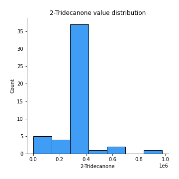

Exploratory Data Analysis¶
Feature : target¶
Feature type : discrete
Missing : 0.0%
Unique : 6
Count :50.0
Mean :2.52
Std :1.6566501730656256
Min :0.0
25%th Percentile : 1.0
50%th Percentile : 2.5
75%th Percentile : 4.0
Max :5.0
Feature : Ethyl Acetate¶
Feature type : continous
Missing : 0.0%
Unique : 34
Count :50.0
Mean :241719.83277108436
Std :288504.35724400193
Min :0.0
25%th Percentile : 0.0
50%th Percentile : 146897.5
75%th Percentile : 359498.0
Max :1077717.0
Feature : Ethanol¶
Feature type : continous
Missing : 0.0%
Unique : 44
Count :50.0
Mean :2254886.86
Std :2458213.9046446397
Min :0.0
25%th Percentile : 253299.0
50%th Percentile : 1214585.5
75%th Percentile : 3546757.75
Max :8155560.0
Feature : Propanoic acid, ethyl ester¶
Feature type : continous
Missing : 0.0%
Unique : 3
Count :50.0
Mean :13135.752592592595
Std :15137.98020675828
Min :0.0
25%th Percentile : 0.0
50%th Percentile : 17989.40740740741
75%th Percentile : 17989.40740740741
Max :99116.0
Feature : 2-Pentanone¶
Feature type : continous
Missing : 0.0%
Unique : 48
Count :50.0
Mean :1023560.18
Std :933441.6299633529
Min :0.0
25%th Percentile : 445433.5
50%th Percentile : 607125.5
75%th Percentile : 1324438.75
Max :3917970.0
Feature : Decane¶
Feature type : continous
Missing : 0.0%
Unique : 26
Count :50.0
Mean :240121.64
Std :308758.4830382347
Min :0.0
25%th Percentile : 0.0
50%th Percentile : 7.5
75%th Percentile : 455906.0
Max :1105838.0
Feature : Methyl Isobutyl Ketone¶
Feature type : continous
Missing : 0.0%
Unique : 13
Count :50.0
Mean :219746.27333333343
Std :303591.7775082141
Min :0.0
25%th Percentile : 0.0
50%th Percentile : 218195.5614035088
75%th Percentile : 218195.5614035088
Max :1309090.0
Feature : Amylene hydrate¶
Feature type : continous
Missing : 0.0%
Unique : 24
Count :50.0
Mean :92544.26
Std :148321.4814024618
Min :0.0
25%th Percentile : 0.0
50%th Percentile : 0.0
75%th Percentile : 149430.0
Max :694251.0
Feature : Butanoic acid, 2-methyl-, methyl ester¶
Feature type : continous
Missing : 0.0%
Unique : 5
Count :50.0
Mean :264185.9925925925
Std :263622.96796798095
Min :0.0
25%th Percentile : 287247.7037037037
50%th Percentile : 287247.7037037037
75%th Percentile : 287247.7037037037
Max :1437190.0
Feature : Isobutyl acetate¶
Feature type : continous
Missing : 0.0%
Unique : 9
Count :50.0
Mean :40411.84518518516
Std :72540.76032813931
Min :0.0
25%th Percentile : 0.0
50%th Percentile : 0.0
75%th Percentile : 46016.2037037037
Max :381024.0
Feature : Methyl isovalerate¶
Feature type : continous
Missing : 0.0%
Unique : 8
Count :50.0
Mean :85447.35333333332
Std :129890.46860462971
Min :0.0
25%th Percentile : 0.0
50%th Percentile : 97276.9298245614
75%th Percentile : 97276.9298245614
Max :608115.0

Feature : 1-Propanol¶
Feature type : continous
Missing : 0.0%
Unique : 9
Count :50.0
Mean :330823.1577777777
Std :383313.6384297382
Min :0.0
25%th Percentile : 157180.75
50%th Percentile : 317293.22222222225
75%th Percentile : 317293.22222222225
Max :1821750.0
Feature : Methyl thiolacetate¶
Feature type : continous
Missing : 0.0%
Unique : 33
Count :50.0
Mean :101203.94
Std :103383.37114074439
Min :0.0
25%th Percentile : 0.0
50%th Percentile : 83453.5
75%th Percentile : 168740.5
Max :352289.0
Feature : Butanoic acid, 2-methyl-, ethyl ester¶
Feature type : continous
Missing : 0.0%
Unique : 17
Count :50.0
Mean :817916.1746666665
Std :401221.9279266553
Min :0.0
25%th Percentile : 713709.4333333333
50%th Percentile : 713709.4333333333
75%th Percentile : 713709.4333333333
Max :2198502.0
Feature : 2-Hexanone¶
Feature type : continous
Missing : 0.0%
Unique : 13
Count :50.0
Mean :38838.32421052631
Std :50392.21384851915
Min :0.0
25%th Percentile : 0.0
50%th Percentile : 39797.61403508772
75%th Percentile : 39797.61403508772
Max :183084.0
Feature : Ethyl isocyanide¶
Feature type : continous
Missing : 0.0%
Unique : 6
Count :50.0
Mean :18661.46
Std :20749.44154764614
Min :0.0
25%th Percentile : 0.0
50%th Percentile : 19984.0
75%th Percentile : 19984.0
Max :105656.0
Feature : 1-Propanol, 2-methyl-¶
Feature type : continous
Missing : 0.0%
Unique : 43
Count :50.0
Mean :222319.46
Std :180729.06325172307
Min :0.0
25%th Percentile : 61524.0
50%th Percentile : 205089.0
75%th Percentile : 358615.25
Max :613288.0
Feature : 2-Pentanol, 2-methyl-¶
Feature type : continous
Missing : 0.0%
Unique : 18
Count :50.0
Mean :30976.013253012046
Std :50216.79552057735
Min :0.0
25%th Percentile : 0.0
50%th Percentile : 0.0
75%th Percentile : 60784.5
Max :197683.0
Feature : 2-Pentanol¶
Feature type : continous
Missing : 0.0%
Unique : 16
Count :50.0
Mean :281735.1666666665
Std :426732.92941427516
Min :0.0
25%th Percentile : 0.0
50%th Percentile : 265630.649122807
75%th Percentile : 265630.649122807
Max :2282603.0

Feature : 1-Butanol, 3-methyl-, acetate¶
Feature type : continous
Missing : 0.0%
Unique : 7
Count :50.0
Mean :24481.535999999986
Std :32892.44193657447
Min :0.0
25%th Percentile : 19126.2
50%th Percentile : 19126.2
75%th Percentile : 19126.2
Max :156927.0
Feature : 1 - Undecene¶
Feature type : continous
Missing : 0.0%
Unique : 16
Count :50.0
Mean :5369591.012592591
Std :1975954.6987178533
Min :0.0
25%th Percentile : 5627687.703703703
50%th Percentile : 5627687.703703703
75%th Percentile : 5627687.703703703
Max :10477684.0

Feature : 1-Butanol¶
Feature type : continous
Missing : 0.0%
Unique : 30
Count :50.0
Mean :1392187.873333333
Std :1117135.9661465273
Min :0.0
25%th Percentile : 518589.0
50%th Percentile : 1456599.6666666667
75%th Percentile : 1456599.6666666667
Max :3989960.0
Feature : 2-Heptanone¶
Feature type : continous
Missing : 0.0%
Unique : 28
Count :50.0
Mean :128702.0
Std :192574.30068396553
Min :0.0
25%th Percentile : 0.0
50%th Percentile : 68723.5
75%th Percentile : 180497.5
Max :1022779.0
Feature : Dodecane¶
Feature type : continous
Missing : 0.0%
Unique : 4
Count :50.0
Mean :12237.886666666669
Std :38779.31606495081
Min :0.0
25%th Percentile : 0.0
50%th Percentile : 0.0
75%th Percentile : 16751.333333333332
Max :265644.0
Feature : 1-Butanol, 3-methyl-¶
Feature type : continous
Missing : 0.0%
Unique : 50
Count :50.0
Mean :7125776.8
Std :7517505.945176336
Min :908313.0
25%th Percentile : 2362158.25
50%th Percentile : 4998857.5
75%th Percentile : 8338310.5
Max :37125000.0
Feature : S-Methyl 3-methylbutanethioate¶
Feature type : continous
Missing : 0.0%
Unique : 16
Count :50.0
Mean :358648.5333333335
Std :156021.16314416172
Min :89553.0
25%th Percentile : 334880.3333333333
50%th Percentile : 334880.3333333333
75%th Percentile : 334880.3333333333
Max :1013976.0
Feature : 2-Heptanone, 4,6-dimethyl-¶
Feature type : continous
Missing : 0.0%
Unique : 14
Count :50.0
Mean :47556.62814814816
Std :54467.43970956811
Min :0.0
25%th Percentile : 0.0
50%th Percentile : 59419.96296296296
75%th Percentile : 59419.96296296296
Max :228006.0
Feature : 3-Buten-1-ol, 3-methyl-¶
Feature type : continous
Missing : 0.0%
Unique : 39
Count :50.0
Mean :148693.76
Std :158960.77110722146
Min :0.0
25%th Percentile : 57801.0
50%th Percentile : 102848.5
75%th Percentile : 158281.5
Max :704490.0
Feature : Thiocyanic acid, methyl ester¶
Feature type : continous
Missing : 0.0%
Unique : 5
Count :50.0
Mean :51143.05555555553
Std :43158.757948246144
Min :0.0
25%th Percentile : 58038.22222222222
50%th Percentile : 58038.22222222222
75%th Percentile : 58038.22222222222
Max :254571.0

Feature : Acetoin¶
Feature type : continous
Missing : 0.0%
Unique : 21
Count :50.0
Mean :198289.52
Std :389238.7399545917
Min :0.0
25%th Percentile : 0.0
50%th Percentile : 0.0
75%th Percentile : 199281.75
Max :2056879.0
Feature : 1-Pentanol, 2-methyl-¶
Feature type : continous
Missing : 0.0%
Unique : 9
Count :50.0
Mean :42891.570370370384
Std :31287.825678090947
Min :0.0
25%th Percentile : 48789.62962962963
50%th Percentile : 48789.62962962963
75%th Percentile : 48789.62962962963
Max :163793.0
Feature : Butanoic acid, 3-methyl-, 2-methylbutyl ester¶
Feature type : continous
Missing : 0.0%
Unique : 11
Count :50.0
Mean :114360.02222222228
Std :90252.77323955247
Min :0.0
25%th Percentile : 103049.88888888888
50%th Percentile : 103049.88888888888
75%th Percentile : 103049.88888888888
Max :590669.0
Feature : 2-Heptanol, 4-methyl-¶
Feature type : continous
Missing : 0.0%
Unique : 7
Count :50.0
Mean :51937.66296296296
Std :55695.85419073912
Min :0.0
25%th Percentile : 45394.51851851852
50%th Percentile : 45394.51851851852
75%th Percentile : 45394.51851851852
Max :254736.0
Feature : 2-Nonanone¶
Feature type : continous
Missing : 0.0%
Unique : 35
Count :50.0
Mean :610164.6733333336
Std :554677.6136026408
Min :75932.0
25%th Percentile : 272400.0
50%th Percentile : 618212.5833333333
75%th Percentile : 618535.1666666666
Max :2654044.0
Feature : Acetic acid¶
Feature type : continous
Missing : 0.0%
Unique : 36
Count :50.0
Mean :3770857.941052632
Std :4258229.798871652
Min :125680.0
25%th Percentile : 1265311.75
50%th Percentile : 3192334.0350877196
75%th Percentile : 3241608.0701754387
Max :21176351.0
Feature : 2-Nonanol¶
Feature type : continous
Missing : 0.0%
Unique : 16
Count :50.0
Mean :639401.2918518521
Std :411757.9454457555
Min :0.0
25%th Percentile : 628854.074074074
50%th Percentile : 628854.074074074
75%th Percentile : 628854.074074074
Max :2526340.0
Feature : Pyrrole¶
Feature type : continous
Missing : 0.0%
Unique : 16
Count :50.0
Mean :377259.28074074053
Std :86695.83320620656
Min :103804.0
25%th Percentile : 371058.6296296296
50%th Percentile : 371058.6296296296
75%th Percentile : 371058.6296296296
Max :720171.0

Feature : 1H-Pyrrole, 2-methyl-¶
Feature type : continous
Missing : 0.0%
Unique : 14
Count :50.0
Mean :352149.0785185186
Std :119856.18498810727
Min :0.0
25%th Percentile : 333395.7407407408
50%th Percentile : 333395.7407407408
75%th Percentile : 333395.7407407408
Max :621874.0

Feature : 1-Heptanol, 2,4-dimethyl-,¶
Feature type : continous
Missing : 0.0%
Unique : 17
Count :50.0
Mean :49322.05037037036
Std :57888.28404320323
Min :0.0
25%th Percentile : 0.0
50%th Percentile : 49898.40740740741
75%th Percentile : 56768.0
Max :274686.0
Feature : Propanoic acid¶
Feature type : continous
Missing : 0.0%
Unique : 19
Count :50.0
Mean :69033.50142857141
Std :86735.67783264867
Min :0.0
25%th Percentile : 0.0
50%th Percentile : 57874.07142857143
75%th Percentile : 59898.75
Max :364754.0
Feature : Propanoic acid, 2-methyl-¶
Feature type : continous
Missing : 0.0%
Unique : 3
Count :50.0
Mean :15162.98799999999
Std :12839.722628077887
Min :0.0
25%th Percentile : 0.0
50%th Percentile : 20034.1
75%th Percentile : 20034.1
Max :76990.0

Feature : 1-Octanol¶
Feature type : continous
Missing : 0.0%
Unique : 18
Count :50.0
Mean :640645.9222222217
Std :341361.9441740945
Min :0.0
25%th Percentile : 664654.7777777778
50%th Percentile : 664654.7777777778
75%th Percentile : 664654.7777777778
Max :1900921.0

Feature : 2-Undecanone¶
Feature type : continous
Missing : 0.0%
Unique : 34
Count :50.0
Mean :527311.7903703703
Std :362955.3732708817
Min :0.0
25%th Percentile : 285671.75
50%th Percentile : 590926.9074074074
75%th Percentile : 590926.9074074074
Max :1644906.0
Feature : Benzoic acid, methyl ester¶
Feature type : continous
Missing : 0.0%
Unique : 23
Count :50.0
Mean :139759.22222222216
Std :127351.78661012037
Min :0.0
25%th Percentile : 20355.75
50%th Percentile : 134161.44444444444
75%th Percentile : 152331.36111111112
Max :556478.0

Feature : Butyrolactone¶
Feature type : continous
Missing : 0.0%
Unique : 3
Count :50.0
Mean :32754.178666666667
Std :26340.528469711986
Min :0.0
25%th Percentile : 0.0
50%th Percentile : 43750.23333333333
75%th Percentile : 43750.23333333333
Max :150201.0

Feature : Decanoic acid, ethyl ester¶
Feature type : continous
Missing : 0.0%
Unique : 6
Count :50.0
Mean :37734.055555555584
Std :54888.88841120313
Min :0.0
25%th Percentile : 0.0
50%th Percentile : 37525.444444444445
75%th Percentile : 37525.444444444445
Max :344949.0
Feature : Acetic acid, decyl ester¶
Feature type : continous
Missing : 0.0%
Unique : 6
Count :50.0
Mean :36367.26888888886
Std :45133.677543249505
Min :0.0
25%th Percentile : 0.0
50%th Percentile : 37478.11111111111
75%th Percentile : 37478.11111111111
Max :261433.0
Feature : 2-Undecanol¶
Feature type : continous
Missing : 0.0%
Unique : 21
Count :50.0
Mean :338073.234074074
Std :570427.8888711976
Min :0.0
25%th Percentile : 0.0
50%th Percentile : 244586.0
75%th Percentile : 338121.48148148146
Max :3287479.0
Feature : Butanoic acid, 3-methyl-¶
Feature type : continous
Missing : 0.0%
Unique : 17
Count :50.0
Mean :2507541.2026666654
Std :790842.7422471911
Min :1607769.0
25%th Percentile : 2403459.033333333
50%th Percentile : 2403459.033333333
75%th Percentile : 2403459.033333333
Max :5887513.0

Feature : 2-Dodecanone¶
Feature type : continous
Missing : 0.0%
Unique : 8
Count :50.0
Mean :29310.93851851853
Std :25048.231624577184
Min :0.0
25%th Percentile : 7727.12037037037
50%th Percentile : 30908.48148148148
75%th Percentile : 30908.48148148148
Max :103754.0
Feature : 1-Decanol¶
Feature type : continous
Missing : 0.0%
Unique : 19
Count :50.0
Mean :1539228.463703704
Std :1293453.2597995528
Min :0.0
25%th Percentile : 1224696.5740740742
50%th Percentile : 1524509.2962962964
75%th Percentile : 1524509.2962962964
Max :7740141.0
Feature : 2-Tridecanone¶
Feature type : continous
Missing : 0.0%
Unique : 20
Count :50.0
Mean :311688.25703703694
Std :142909.21151373317
Min :0.0
25%th Percentile : 314530.962962963
50%th Percentile : 314530.962962963
75%th Percentile : 314530.962962963
Max :975303.0

Feature : Dodecanoic acid, ethyl ester¶
Feature type : continous
Missing : 0.0%
Unique : 5
Count :50.0
Mean :19989.58814814813
Std :27663.214710577144
Min :0.0
25%th Percentile : 0.0
50%th Percentile : 21410.85185185185
75%th Percentile : 21410.85185185185
Max :171353.0
Feature : 1,4-Butanediol¶
Feature type : continous
Missing : 0.0%
Unique : 3
Count :50.0
Mean :16017.470666666653
Std :12871.635471828
Min :0.0
25%th Percentile : 0.0
50%th Percentile : 21398.13333333333
75%th Percentile : 21398.13333333333
Max :73337.0

Feature : Phenylethyl Alcohol¶
Feature type : continous
Missing : 0.0%
Unique : 18
Count :50.0
Mean :141738.7503703704
Std :46634.31220179956
Min :0.0
25%th Percentile : 147761.62962962964
50%th Percentile : 147761.62962962964
75%th Percentile : 147761.62962962964
Max :257087.0
Feature : Acetophenone, 2’-amino-¶
Feature type : continous
Missing : 0.0%
Unique : 13
Count :50.0
Mean :334516.0740740739
Std :259734.60925866014
Min :0.0
25%th Percentile : 343307.962962963
50%th Percentile : 343307.962962963
75%th Percentile : 343307.962962963
Max :1937240.0

Feature : 2-Tridecanol¶
Feature type : continous
Missing : 0.0%
Unique : 12
Count :50.0
Mean :58810.76592592596
Std :45322.27054590935
Min :0.0
25%th Percentile : 56845.07407407407
50%th Percentile : 56845.07407407407
75%th Percentile : 56845.07407407407
Max :231601.0
Feature : Tetradecanal¶
Feature type : continous
Missing : 0.0%
Unique : 2
Count :50.0
Mean :5156.54
Std :4077.944461242648
Min :0.0
25%th Percentile : 0.0
50%th Percentile : 8317.0
75%th Percentile : 8317.0
Max :8317.0
Feature : 1-Dodecanol¶
Feature type : continous
Missing : 0.0%
Unique : 20
Count :50.0
Mean :2125704.175555557
Std :1389440.769323185
Min :242246.0
25%th Percentile : 1837700.25
50%th Percentile : 2098782.4444444445
75%th Percentile : 2098782.4444444445
Max :8172616.0
Feature : Methyl tetradecanoate¶
Feature type : continous
Missing : 0.0%
Unique : 8
Count :50.0
Mean :98979.62666666668
Std :123349.42796958846
Min :0.0
25%th Percentile : 13159.25
50%th Percentile : 97878.33333333331
75%th Percentile : 97878.33333333331
Max :698476.0
Feature : 2-Pentadecanone¶
Feature type : continous
Missing : 0.0%
Unique : 14
Count :50.0
Mean :85214.10962962963
Std :61065.49367765471
Min :0.0
25%th Percentile : 83540.59259259258
50%th Percentile : 85753.37037037036
75%th Percentile : 85753.37037037036
Max :382222.0
Feature : Tetradecanoic acid, ethyl ester¶
Feature type : continous
Missing : 0.0%
Unique : 3
Count :50.0
Mean :7630.7992592592545
Std :9787.968706052938
Min :0.0
25%th Percentile : 0.0
50%th Percentile : 10167.74074074074
75%th Percentile : 10167.74074074074
Max :66340.0
Feature : Hexadecanal¶
Feature type : continous
Missing : 0.0%
Unique : 11
Count :50.0
Mean :81005.9096296296
Std :61676.654751540606
Min :0.0
25%th Percentile : 69126.0
50%th Percentile : 94159.37037037036
75%th Percentile : 94159.37037037036
Max :400513.0
Feature : n-Tridecan-1-ol¶
Feature type : continous
Missing : 0.0%
Unique : 9
Count :50.0
Mean :80178.47037037039
Std :62979.97736571915
Min :0.0
25%th Percentile : 85581.62962962964
50%th Percentile : 85581.62962962964
75%th Percentile : 85581.62962962964
Max :314284.0
Feature : 1-Tetradecanol¶
Feature type : continous
Missing : 0.0%
Unique : 20
Count :50.0
Mean :529247.7437037034
Std :215185.47029302336
Min :0.0
25%th Percentile : 586042.2962962963
50%th Percentile : 586042.2962962963
75%th Percentile : 586042.2962962963
Max :1084828.0
Feature : n-Pentadecanol¶
Feature type : continous
Missing : 0.0%
Unique : 7
Count :50.0
Mean :170159.59384615376
Std :262916.60722340376
Min :0.0
25%th Percentile : 19868.75
50%th Percentile : 173037.61538461538
75%th Percentile : 173037.61538461538
Max :1869692.0
Feature : 1-Hexadecanol¶
Feature type : continous
Missing : 0.0%
Unique : 17
Count :50.0
Mean :567417.0259259262
Std :341602.86381717335
Min :0.0
25%th Percentile : 413098.0
50%th Percentile : 662122.074074074
75%th Percentile : 662122.074074074
Max :1940003.0
Feature : Indole¶
Feature type : continous
Missing : 0.0%
Unique : 20
Count :50.0
Mean :83225771.18
Std :11244659.250069898
Min :43562718.0
25%th Percentile : 82469063.0
50%th Percentile : 82469063.0
75%th Percentile : 82469063.0
Max :111534573.0